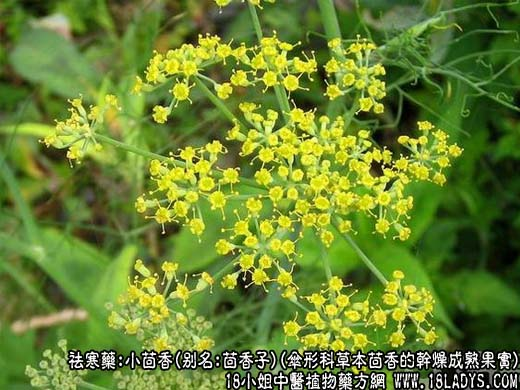
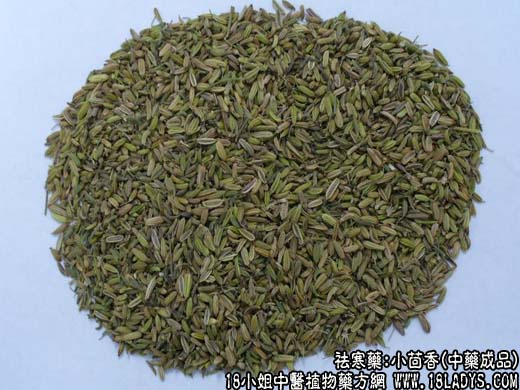
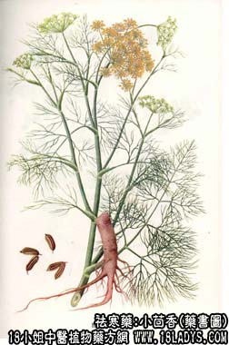

小茴香为常用中药。始载《唐本草》，原名怀香。它主要有补阳散寒、理气开胃，止呕的功效，治疗治寒疝作痛，腹脘胀痛，食少呕吐等症状，茴香分为小茴香和大茴香二种，下面中药师宁宁和大家了解小茴香图片以及功效与作用。

小茴香图片源物

小茴香图片 孜然

别名：茴香子，小茴。
来源：伞形科多年生草本植物茴香的干燥成熟果实。均为栽培。
产地：主产内蒙，山西其它各地均有栽培。
性状鉴别：小茴香为双悬果，形似稻谷而细小或稍弯曲，长5～6毫米，直径约2毫米，黄绿色，有明显的纵棱线及沟。果实有时纵分为两瓣，腹面较平，中间绿色。背面有五条纵棱。气芳香味微甜。以子粒均匀，饱满，黄绿色，香气浓厚者为佳。
主要成分：含挥发油，其中主要为茴香醚、小茴香酮。
药理作用：主要作用为健胃，对胃肠起温和刺激作用，能减少肠胃气胀。此外，临床观察认为小茴香有一定镇痛作用，无论对胃肠痉挛痛或肌肉挫伤捩伤痛，都有一定缓解作用。
炮制：盐水炒。
性味：辛、温。
归经：入肝、肾、脾、胃经。
功能：补阳散寒、理气开胃，止呕。
主治：治寒疝作痛，腹脘胀痛，食少呕吐。
临床应用：
1、用于治消化不良，可视为芳香性健胃剂，常配生姜、厚朴等药同用。
2、用于治疗寒疝(包括肠绞痛、睾丸和附睾肿痛，阴囊冰冷而有抽紧痛，并牵涉至小腹)，取其有散寒止痛作用，常配木香、川楝子等，如属睾丸鞘膜积液引起之疼痛，则再加配枳壳、白芍、苡仁等，方如睾丸鞘膜积液方。
用量：1.5～4.5g。
处方举例：睾丸鞘膜积液方：小茴香3g，川楝子12g，木香3g，枳壳9g，白芍12g，黄柏9g，槟榔6g，生薏苡仁24g，木通6g，水煎服。
注：近似品；伞形科植物莳萝的果实，分果呈扁平椭圆形，长3～5毫米，宽1.5～3毫米，厚约1毫米。表面中心棕色，边缘黄绿色。背面有三条微隆起肋线，腹面中央有一条棱线。小茴香除要用外，多作调味香咪，并供出口。
了解更多驱寒药，为您推荐↓↓↓↓